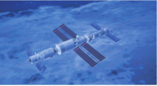
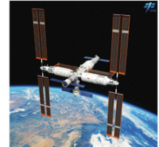

教材文本 · 实用类文本阅读
中国人首次进入自己的空间站
消息以发射、交会对接和进入天和核心舱的时间节点，报道神舟十二号乘组首次进驻中国空间站，并说明后续任务。
导读
文体与题材：消息，报道2021年6月17日神舟十二号乘组进驻天和核心舱。
作者简介：余建斌、吴月辉、刘诗瑶，《人民日报》记者，本文共同署名。
文本出处：《人民日报》2021年6月18日第1版。教材以“中国人首次进入自己的空间站”为正题，以“神舟十二号三名航天员顺利进驻天和核心舱”为引题。
内容脉络：开头交代发射及对接的时间、地点、参与者和技术过程，随后按入舱程序写乘组进入天和核心舱，落实标题中的核心事件；末段转向后续驻留和技术验证计划。
内容主旨：报道中国航天员首次进入中国空间站这一事件，呈现进驻过程及任务安排。标题中的“首次”“自己的”突出事件的时间意义和所属关系。
阅读重点：区分发射、对接与进入核心舱三个节点；辨认电头、信息来源和正文的作用；注意已完成事实与后续计划的语气差别。
消息标题
引题：神舟十二号三名航天员顺利进驻天和核心舱
正题：中国人首次进入自己的空间站
课文
原文按结构分节；随文内容可定位至对应段落。
开篇：电头与消息来源领起报道，正文交代飞船发射和交会对接的事实。
《人民日报》酒泉2021年6月17日电 记者从中国载人航天工程办公室获悉：6月17日9时22分，神舟十二号载人飞船在酒泉卫星发射中心发射升空，准确进入预定轨道，顺利将三名航天员送上太空。神舟十二号载人飞船入轨后顺利完成入轨状态设置，于北京时间6月17日15时54分，采用自主快速交会对接模式成功对接于天和核心舱前向端口，与此前已对接的天舟二号货运飞船一起构成三舱（船）组合体，整个交会对接过程历时约6.5小时。这是天和核心舱发射入轨后，首次与载人飞船进行的交会对接。

注释 · 批注 · 札记 5
教材原注 · 出处
《人民日报》酒泉2021年6月17日电选自2021年6月18日《人民日报》。
教材原注 · 酒泉卫星发射中心
酒泉卫星发射中心我国科学卫星、技术试验卫星、返回型卫星、载人飞船和运载火箭的发射试验基地。位于甘肃酒泉东北。是我国建设最早的航天器发射试验基地。
教材旁批 · 标题配合
《人民日报》酒泉2021年6月17日电引题与正题配合。注意体会标题中的关键词，感受其中传达的民族自豪感。
释读：引题交代飞船、人数及进驻地点，正题突出“首次”和“自己的”。阅读时先落实事件，再体会这些词所包含的新闻价值与情感取向。
教材旁批 · 信息来源
记者从中国载人航天工程办公室获悉交代信息来源，体现了新闻的权威性。
释读：“从……获悉”明确报道所据的消息来源，使时间、任务和进驻过程可以追溯核查。
札记 · 时间与估量
历时约6.5小时9时22分至15时54分相隔6小时32分钟。“约6.5小时”采用近似数概括时长；具体时刻与近似时长并用，分别服务于时间节点和过程规模的说明。
主体：乘组依程序开启舱门进入核心舱，完成标题所说的首次进驻。
在神舟十二号载人飞船与天和核心舱成功实现自主快速交会对接后，航天员乘组从返回舱进入轨道舱。按程序完成各项准备后，先后开启节点舱舱门、核心舱舱门，北京时间17日18时48分，航天员聂海胜、刘伯明、汤洪波先后进入天和核心舱，标志着中国人首次进入自己的空间站。

批注 · 评议 2
教材旁批 · 入舱程序
航天员乘组从返回舱进入轨道舱逐一介绍航天员进入空间站的各个环节，让读者具体了解标题中的信息。
释读：先进入轨道舱，再完成准备并开启相关舱门，最后到达天和核心舱。程序说明把“进入”这一概括说法落实为有次序的行动。
评议 · 事件报道与模拟图
标志着中国人首次进入自己的空间站教材图注明确标为“模拟构型图”。模拟图帮助识别空间站外形，报道此次进驻的事实则由正文的时间、人物与行动提供。读图时须辨明图像的性质及其能够说明的内容。
收束：报道转向在轨驻留、出舱活动及技术验证等后续计划。
研究与赏析
消息以可核查事件为报道中心。本文首段较集中地给出时间、地点、人物和进程，随后展开入舱程序，结尾提供任务计划；其主体同时具有清楚的时间次序。
辨认说明顺序时，应说明各时刻、舱段和动作之间的关系。若只概括为“按时间顺序”，仍需交代哪些节点推进了核心事件。
第1题 · 标题与核心事件
自编研读题：引题和正题各提供哪些信息？“首次”“自己的”怎样突出本次报道的核心事件？
参考答案1展开 / 收起
参考作答
- 引题提供神舟十二号、三名航天员和天和核心舱等信息，使读者明确此次进驻的参与者与地点。
- 正题聚焦中国航天员首次进入中国空间站；“首次”限定事件的时间意义，“自己的”突出空间站的所属关系。
审题与考查点
辨明两级标题的分工，并用正文核对标题所概括的事件。
文本分析
引题交代具体对象查看证据 ↗
引题中的“三名航天员”在正文落实为聂海胜、刘伯明、汤洪波；“顺利进驻”由准备、开门、入舱等程序具体展开。
正题突出首次进驻查看证据 ↗
正文明确以航天员进入天和核心舱作为“首次进入”的标志。前一段的首次载人交会对接属于相关技术进程，两个“首次”分别指向不同事件。
知识点
解题方法
先把标题中的人物、动作和地点逐项还原，再回到正文确认完成动作的时刻，最后解释关键词的限定。
易误辨析
“进入空间站”与“完成交会对接”须分别落实。只有飞船对接完成，尚不足以表述人员已经进入核心舱。
答案组织与检核
分别说明引题、正题及关键词，并以入舱事实核对“首次进入”的判断。
第2题 · 报道次序
自编研读题：按时间节点梳理发射、对接和进驻的过程，并说明末段与前两段在时间状态上有什么区别。
参考答案2展开 / 收起
参考作答
- 6月17日9时22分发射，15时54分完成与天和核心舱前向端口的自主快速交会对接，报道以具体时刻呈现进程。
- 对接后，乘组先进入轨道舱，按程序准备并开启舱门，18时48分先后进入天和核心舱。
- 末段概述三个月驻留及机械臂操作、出舱活动、技术验证等安排，“将按计划”表明这些是报道时尚待开展的工作。
审题与考查点
复述关键进程，区分已完成事实和未来计划。
文本分析
发射与交会对接查看证据 ↗
第一段由发射入轨写到状态设置与交会对接，时刻及“后”“于”等语词共同限定步骤的先后。
入舱完成核心事件查看证据 ↗
第二段将对接作为入舱的前提，依次写经过的舱段、开启舱门和最终到达，说明“进入”有具体程序。
后续计划补充任务信息查看证据 ↗
“后续”连接本次进驻与后面的任务，“将按计划”规定语气。已完成的入舱与拟开展的工作须分开概括。
知识点
解题方法
列出时刻、主体和动作三项，再将没有具体完成时刻、带有“将”字的内容归为计划。
易误辨析
“三个月”说明拟驻留的时长，不能写成这篇6月17日电讯已经报道三个月驻留结束。
答案组织与检核
核对三个时刻和相应动作，末段须使用计划或将来语气。
第3题 · 消息语言
自编研读题：本文怎样用信息来源、具体数据和简洁表述增强报道的可核查性？请结合词句分析。
参考答案3展开 / 收起
参考作答
- 电头标明发稿地点和日期，“从中国载人航天工程办公室获悉”交代消息来源，使读者知道报道依据何来。
- 具体时刻定位发射、对接与入舱，“约6.5小时”概括时长，“三名”“三舱（船）”限定人数和组合关系。
- 正文用“先后开启”“先后进入”概括动作次序，以“后续”“将按计划”转向任务安排，较少加入人物感言或场景铺写。
审题与考查点
从具体语言形式说明其承担的信息功能，避免只列“准确、简明”等评价词。
文本分析
来源明确便于追溯查看证据 ↗
电头标明消息的发稿地点和日期，消息来源说明记者从何处获得信息，两者分别提供发稿与取材的追溯线索。
数据各有说明对象查看证据 ↗
不同数据分别指向时刻、时长、人数和飞行器组合。近似数“约”保留了时长概括的精度，数字的作用须依说明对象分别解释。
程序与计划措辞简洁查看证据 ↗
这些程序动词与时间标记把事实关系直接交代出来，末段则以同类任务的列举补足后续信息，形成消息的简明表达。
知识点
解题方法
先指出一个词句或数据，再说明它交代何种事实及精度；最后说明这种表达怎样便于理解和核查。
易误辨析
“来源明确”提供核查依据，信息可信性的判断还要结合事实、时间与报道对象。配图若为模拟图，按示意用途阅读。
答案组织与检核
每项都列出具体形式及其功能，保留“约”“将”等有意义的限定。
读读写写
教材词语：获悉、交会、节点、驻留、关键。
研习关联
与《“蛟龙”探海》比较：前者概括2021年空间站进驻过程，后者描写2012年深潜试验现场，应分别核对报道时间和事件。
参考文献
- 教育部组织编写：《义务教育教科书·语文八年级上册》，人民教育出版社，修订教材，第2课。
- 余建斌、吴月辉、刘诗瑶：《中国人首次进入自己的空间站》，《人民日报》，2021年6月18日第1版。
本文关联
新闻文体4 处
阅读条目 →研究与赏析 ↗消息以可核查事件为报道中心。本文首段较集中地给出时间、地点、人物和进程，随后展开入舱程序，结尾提供任务计划；其主体同时具有清楚的时间次序。
知识点 ↗新闻文体区分标题所概括的事件与正文提供的事实；词语锤炼要求说明关键词限定了何种对象、范围或评价。
知识点 ↗消息的事实组织、词语选择的精度及文本证据的范围共同参与本题解释。
研习关联 ↗返回八年级上册；结合消息与通讯辨认报道目的和材料组织。
叙事时序2 处
阅读条目 →研究与赏析 ↗辨认说明顺序时，应说明各时刻、舱段和动作之间的关系。若只概括为“按时间顺序”，仍需交代哪些节点推进了核心事件。
知识点 ↗说明顺序考察事件与程序的安排；文本证据要求保留时间、条件及表示计划的词语。